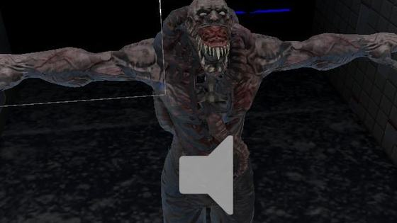
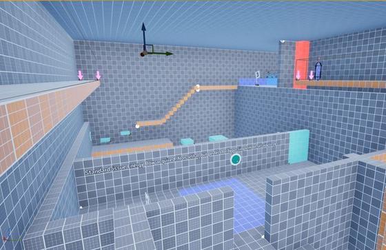
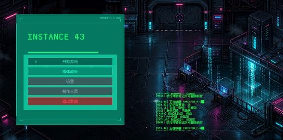
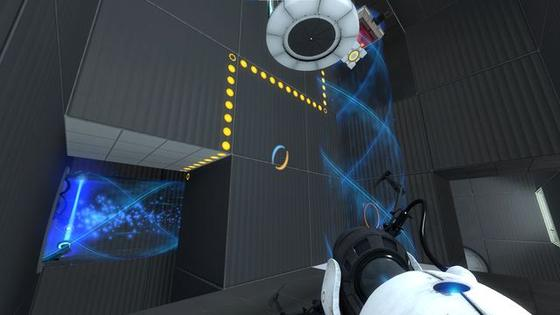
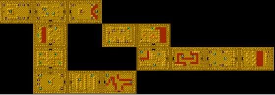
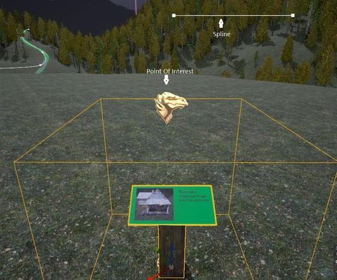
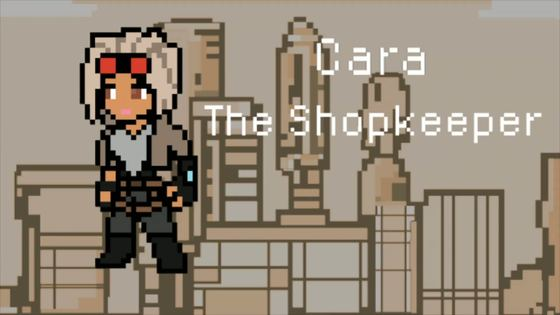
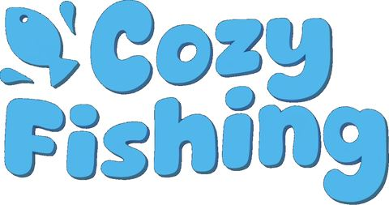
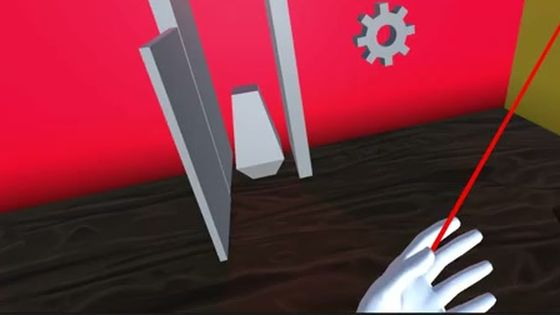

ECHOES
单人开发的潜行恐怖原型。核心是一套 Patrol / Suspicious / Chase / Attack 有限状态机，配合 Unity NavMesh 寻路、听觉与视觉感知，以及一个让玩家能主动切断追踪的躲藏机制。三轮 playtest 迭代把它从"不公平的逃跑模拟器"推成了一款战术潜行体验。

ALS 潜入关卡「Infiltration」
用 Unreal Engine 5 与 ALS 第三人称运动系统做的潜入关卡。三段式节奏（垂直探索 / 潜行 / 限时逃离），核心机制创新是"能量弓按钮链"——玩家必须在掩体后用能量弓按正确顺序射中一串限时按钮。项目最大的收获来自失败：潜行和计时不能混用。

INSTANCE 43
独立完成的 2D 俯视角动作 Demo。我主导角色战斗系统设计——攻击逻辑、技能槽位、成长天赋树，以及多套差异化敌人 AI 行为——并在 Unity 中用可运行原型验证每一个设计判断。核心机制是把一次攻击拆成"部署 + 回收"两个阶段，让玩家持续管理战场上的锚点位置。

Portal 2 测试室「Interleave」
在 Portal 2 内置编辑器里设计并迭代一间四房间结构的解谜测试室。机制 A 是传送漏斗，机制 B 是激光与反射方块，第三、四间房把两者叠加成多步链式解谜。三轮迭代的核心教训是：没有环境约束，玩家一定会绕过你的谜题。

塞尔达式 2D 地牢「Delver」
在课程自研的 2D 地牢关卡编辑器里制作，以初版《塞尔达传说》的地牢为参照。核心是把战斗导向的设计改成环境导向：抓钩 + 可推方块是主谜题机制，钥匙与锁门控制节奏，传送器绕开岩浆。五个阶段的 playtest 迭代最终把重点从"更复杂"转成了"永不让玩家卡死"。

Stormhaven
六人团队在 Unreal Engine 上的续作式项目：以打磨为目标，为既有原型补上探索功能（Vista 电影镜头、快速旅行网络）、扩展 FPS 系统与叙事。我负责 FPS 系统的整体强化——HUD 重设计、血腥屏效果、射击与检视武器动画，以及敌人 AI 行为与音效。

Bounty Hunter
六人团队的 2D 横版动作射击游戏，可在 itch.io 直接游玩。我担任美术组的关卡与 UI 设计，负责全部关卡布局、UI 界面与背景美术。团队用一份把角色数量、音轨数量、UI 清单和"完成定义"全部写死的计划文档，来对抗范围失控。

Cozy Fishing
PC / 主机的休闲风格钓鱼游戏：探索岛屿、接任务、在多种钓鱼小游戏里磨练技巧。我负责商店、鱼类图鉴、任务、主菜单 / 暂停 / 设置等系统的界面逻辑与交互原型——信息架构、交互流程与功能实现由我完成，组员在此基础上做视觉优化。脚本刻意写成可复用、可扩展的形式，让设计团队不用改核心系统就能加内容。

VR Escape Room
Unity / VR 密室逃脱项目。我负责 VR 交互设计、关卡谜题逻辑、用户体验优化与游戏主流程的状态机控制，并独立完成全部 3D 资产制作。玩家被锁在一间神秘的房间里，唯一的出路是解开隐藏在房间中的谜题。